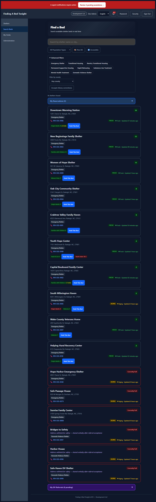

Who Owns the Data?
You do. The platform is self-hosted — your city or CoC deploys it on infrastructure you control. No vendor has access to your shelter data. If you stop using the platform, export your data in HSDS 3.0 format and take it with you.
Accessibility (WCAG 2.1 AA)
The platform is designed to support WCAG 2.1 Level AA — the accessibility standard adopted under ADA Title II for state and local government web content (DOJ Final Rule, April 2024). A self-assessed Accessibility Conformance Report covers all 50 Level A and AA criteria. Automated testing (axe-core) blocks any release with violations.
Dark mode: The platform respects the user's OS dark mode setting automatically — no toggle needed. Outreach workers using phones at night get a dark interface that reduces eye strain and preserves night vision. All color combinations meet WCAG 4.5:1 contrast ratios in both light and dark modes (verified via axe-core automated scans).

Light mode

Dark mode (automatic)
Security Posture
- OWASP dependency scanning in CI (failBuildOnCVSS=7)
- PostgreSQL Row Level Security for DV shelter data isolation
- JWT authentication with startup secret validation
- Rate limiting on authentication endpoints
- Security headers (X-Content-Type-Options, X-Frame-Options, Referrer-Policy)
- OWASP ZAP API scan baseline — zero HIGH/CRITICAL findings
- Cross-tenant isolation verified under concurrent virtual thread load
Full details: Security scan baseline
Licensing & Procurement
Licensed under Apache 2.0 — permissive, no copyleft, no per-seat fees. Your city can modify, deploy, and redistribute the software. No vendor contract required. See the Government Adoption Guide for procurement checklist and RFP language.
Support Model
Community-supported open source with operational runbook, GitHub Issues, and full source code access. For organizations requiring contractual SLAs, integrator partnerships are available. See Support Model.
What's Different from Commercial Alternatives
No per-seat licensing. No vendor lock-in. Your data never leaves your infrastructure. Purpose-built for the communities that need it most — not adapted from a commercial product built for a different market.
← Back to Finding A Bed Tonight